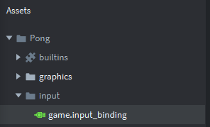
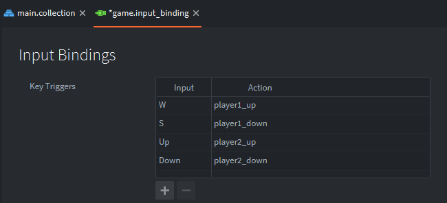

Tutorials for 2D games projects
Pong | Setting keyboard bindings to capture player inputs.
One of the advantages of using a game engine is that it makes some of the essentials so much easier. One of these is handling keyboard inputs within the game loop. With Defold you set input bindings and then use a script to run code when keys are pressed. You can set bindings for the keyboard, mouse, touch gestures, text boxes and gamepad controllers (including analogue sticks). What's great is that you can set bindings for example to WSAD and then also use cursor keys and controller D-pad buttons all with the same script.
We are going to set W and S to up and down for player 1, and the up/down cursor keys for player 2.
- In the Assets panel click 'input' and double click 'game.input_binding'.

- In the editor panel, use the + icon to add the bindings to the keys as shown.
- W - player1_up
- S - player1_down
- Up - player2_up
- Down - player2_down

Note the 'Action' is the message that we will check later in the input script so it is important to name it something recognisable. If you wanted to you could set the mouse or gamepad triggers to the same action to be able to use those inputs as alternatives too.
- Save the changes by pressing CTRL-S or 'File', 'Save All'.
That's the keyboard inputs set. The next step is to create our script for player 1 and add some code to respond to the keys being pressed. Stage 5a >
 Craig'n'Dave | Version 1.3
Craig'n'Dave | Version 1.3